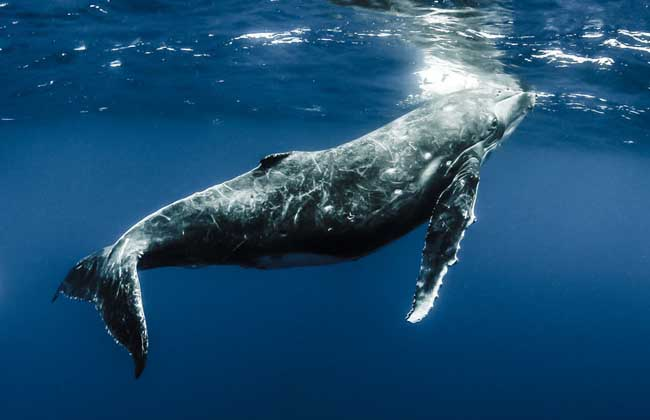
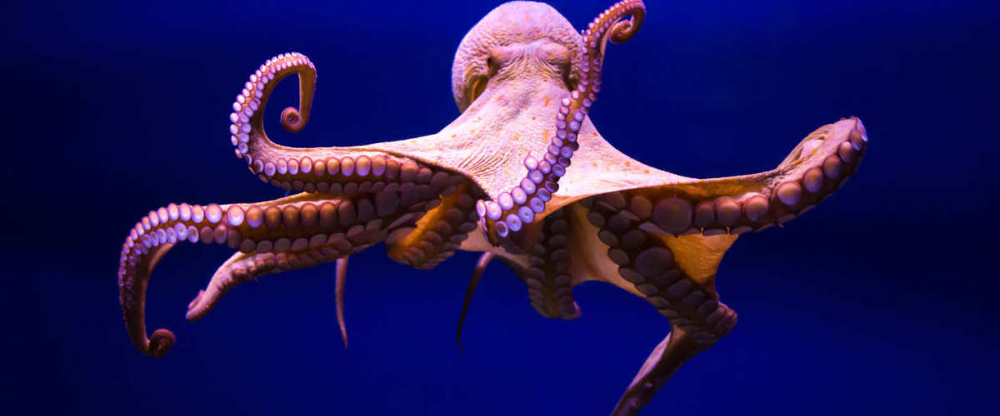
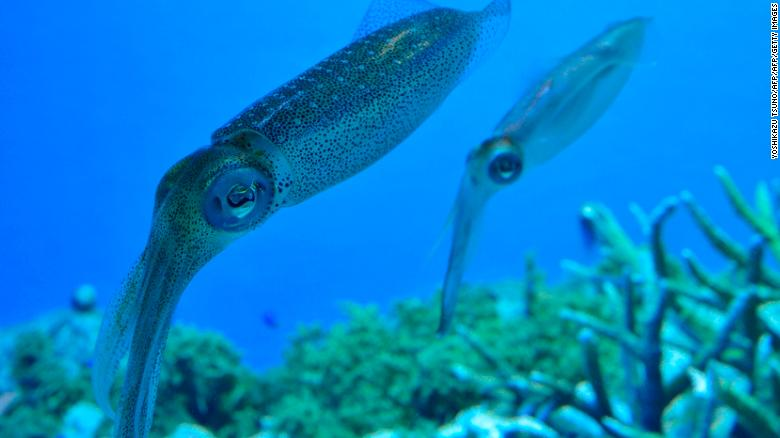

鲸鱼 Cetacea

鲸目动物是完全水栖的哺乳动物，外形看起来和鱼很相似，身体长度一般在1米-30米之间，皮肤裸露，仅吻部有很少的毛，皮下有厚厚的脂肪。这些脂肪有助于保持体温，当它们在水中生活时，这些脂肪能减少身体比重，有利于游泳
由于环境恶化和人类的大量捕杀，鲸目成员特别是一些大型成员由于经济价值高而受到广泛捕猎，许多鲸类已濒临灭绝。
章鱼 Octopus

为温带性软体动物，生活在水下，适应水温不能低于7℃，海水比重1.021最为适宜，低盐度的环境会死亡。能摄食大型动物性浮游生物而成长。广泛分布于世界各大洋的热带及温带海域。
鱿鱼 a squid

也称柔鱼、枪乌贼，是软体动物门头足纲鞘亚纲十腕总目管鱿目开眼亚目的动物。体圆锥形，体色苍白，有淡褐色斑，头大，前方生有触足10条，尾端的肉鳍呈三角形，常成群游弋于深约20米的海洋中
鱿鱼，虽然习惯上称它们为鱼，其实它并不是鱼，而是生活在海洋中的软体动物，身体细长，呈长锥形，前端有吸盘。鱿鱼体内具有二片鳃作为呼吸器官；身体分为头部、很短的颈部和躯干部。身体细长，呈长锥形，其中两只较长。在分类学上，鱿鱼是属于软体动物门——头足纲——二鳃亚纲——十腕目的动物。头部两侧具有一对发达的眼和围绕口周围的腕足。
常活动于浅海中上层，垂直移动范围可达百余米。以磷虾、沙丁鱼、银汉鱼、小公鱼等为食，本身又为凶猛鱼类的猎食对象。 卵子分批成熟，分批产出，卵包于胶质卵鞘中，每个卵鞘随种类不同包卵几个至几百个，不同种类的产卵量差别也很大，从几百个至几万个